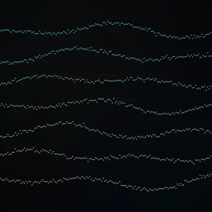
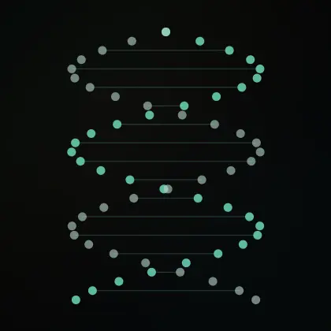
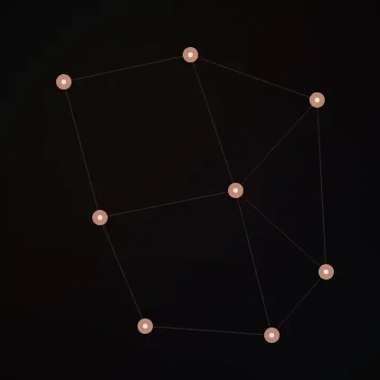
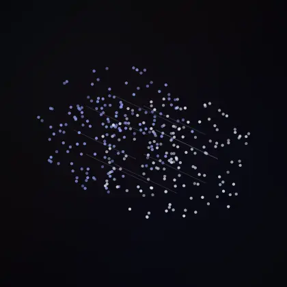

WE WERE NEVER THE FINAL FORM
I founded Zeda on years of research in biotechnology and artificial intelligence, brought together through an open-source philosophy. Zeda is a development studio building the AI and data layer where human and machine intelligence work as one. A merger is not a bandwidth problem. It is a representation problem. The brain is not a keyboard: it predicts, replays what it has lived through during sleep and rewrites itself. Zeda builds the loop.
THE LAST UNIVERSEHAS BEENBECOMING
From mathematical structure to matter. From chemistry to memory. From memory to minds that can rewrite their limits.
Evolution has never respected the boundary of a form.
NOT AN APPNOT AN IMPLANTA NEW LAYER
In the age of AI, biohacking and transhumanism are a center of gravity in human evolution that cannot be avoided. In this transformation it is not only technology that must advance, but the human too; not as a concept, but physically. To that end I build open-source systems that carry the relationship between humans and AI beyond tool use, and test the symbiotic intelligence hypothesis through concrete work. The narrow thing was never the cable. It is the representation.
THREE LOOPS, ONE SHARED SPACE. WITHOUT ALIGNMENT, CONSOLIDATION GOES BLIND. WITHOUT CONSOLIDATION, ALIGNMENT IS ONLY A DESCRIPTION. WITHOUT A SHARED BODY, NEITHER CAN BE VERIFIED.
THE MINDIS OPEN
Memory can already be modulated during sleep, with real causal effect sizes. What nobody has built is the loop: an AI that chooses what the brain replays. That is the frontier.
THE ONLY MISSING PIECE IS WHO CHOOSES WHAT TO REPLAY. ZEDA'S ANSWER: AN AI THAT LEARNS YOUR FORGETTING CURVE AND PROPOSES. YOU DECIDE. THE BRAIN WRITES.
THREE FIELDSONE LAYER
Zeda designs and builds the AI and data layer that turns biological and health data into working products. Data architecture, model development, validation and production deployment are parts of the same job. We deliver not a research narrative, but a system that produces measurable results in the field.
Data architecture, custom model development, analysis pipelines, integration and transhumanism. Let's talk ↗
WE BUILDTHE OPEN BRIDGES
The core pieces already exist: BrainFlow, LSL, MNE, MOABB. We are not rewriting them; we solve the integration and validation problems the ecosystem leaves open. Each package is modular, testable and ships with reproducible results.

Open-source EEG, EMG and behavioral data infrastructure. Signal acquisition, multi-stream synchronization, artifact removal, quality control, recording and real-time model inference in one line. Its layered API runs end to end, from BrainFlow and LSL based setups to NWB/BIDS compliant archives.
Foundation: BrainFlow, Lab Streaming Layer, MNE-LSL, BIDS, NWB, MOABB
Translation between phenotype and genomic data models, schema validation, data provenance and cross-system API integration. A versioned, auditable data layer that makes clinical prioritization and bioinformatics pipelines speak the same vocabulary.
Foundation: GA4GH Phenopackets, HPO, VRS, FHIR
Event-based data exchange between lab instruments, LIMS, file stores and analysis pipelines. A bridge that versions every transfer, keeps it reversible and leaves an auditable work history; one monitoring layer across dry and wet labs.
Foundation: Python, API adapters, Nextflow, nf-core, object storage
Research tools that evaluate relationships between EEG signals, behavioral records and model representations. Cross-subject model transfer, representation alignment metrics and decoder comparisons as reproducible experiment packages; compatible with MOABB and MNE outputs.
Foundation: PyTorch, MOABB, MNE, pyRiemannOPEN DATA AND STANDARD FOUNDATIONS: OPENNEURO · DANDI · MOABB · NF-CORE · GA4GH OUR FIELDS OF WORK
THE FUTUREIS NOTTHEIRS
Not its user. Not its replacement.
The other half of the loop.